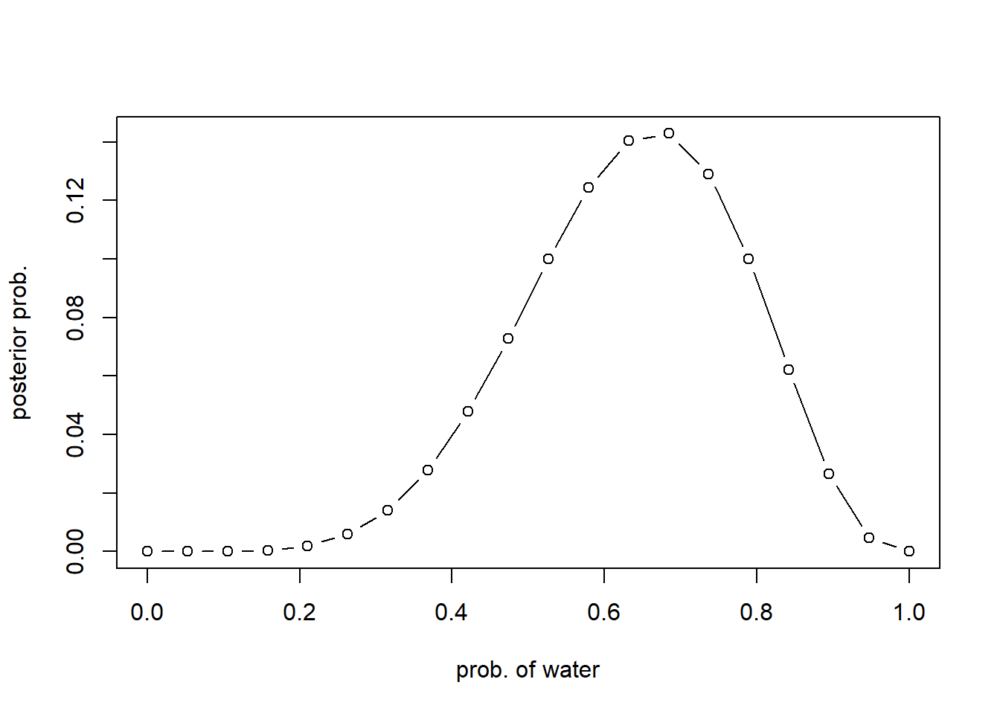

dbinom(6, size=9, prob=0.5)[1] 0.1640625The likelihood of the data: 6 W in 9 tosses, under the probability of 0.5
dbinom(6, size=9, prob=0.5)[1] 0.1640625For the globe tossing example, let’s make a grid of 20 points
# change this for more precision. however, there will not be much change in inference after 100 points
num_of_points = 20
# 1. define grid
p_grid <- seq(from=0, to=1, length.out=num_of_points)
# 2. define prior
prior <- rep(1, num_of_points)
# 3. compute likelihood at each value in the grid
likelihood <- dbinom(6, size=9, prob=p_grid)
# 4. compute product of likelihood and prior
unstd.posterior <- likelihood * prior
# 5. standarize the posterior, so it sums to 1
posterior <- unstd.posterior / sum(unstd.posterior)Let’s display the posterior distribution:
plot(p_grid, posterior, type="b", xlab = "prob. of water", ylab="posterior prob.")
Different prior #1:
num_of_points = 20
# 1. define grid
p_grid <- seq(from=0, to=1, length.out=num_of_points)
# 2. define prior
prior <- ifelse(p_grid < 0.5, 0, 1)
# 3. compute likelihood at each value in the grid
likelihood <- dbinom(6, size=9, prob=p_grid)
# 4. compute product of likelihood and prior
unstd.posterior <- likelihood * prior
# 5. standarize the posterior, so it sums to 1
posterior <- unstd.posterior / sum(unstd.posterior)
# 6. plot
plot(p_grid, posterior, type="b", xlab = "prob. of water", ylab="posterior prob.")Different prior #2:
num_of_points = 20
# 1. define grid
p_grid <- seq(from=0, to=1, length.out=num_of_points)
# 2. define prior
prior <- exp(-5*abs(p_grid - 0.5))
# 3. compute likelihood at each value in the grid
likelihood <- dbinom(6, size=9, prob=p_grid)
# 4. compute product of likelihood and prior
unstd.posterior <- likelihood * prior
# 5. standarize the posterior, so it sums to 1
posterior <- unstd.posterior / sum(unstd.posterior)
# 6. plot
plot(p_grid, posterior, type="b", xlab = "prob. of water", ylab="posterior prob.")library(rethinking)Loading required package: cmdstanrThis is cmdstanr version 0.7.1- CmdStanR documentation and vignettes: mc-stan.org/cmdstanr- CmdStan path: C:/Users/H/Documents/.cmdstan/cmdstan-2.34.1- CmdStan version: 2.34.1
A newer version of CmdStan is available. See ?install_cmdstan() to install it.
To disable this check set option or environment variable CMDSTANR_NO_VER_CHECK=TRUE.Loading required package: posteriorThis is posterior version 1.5.0
Attaching package: 'posterior'The following objects are masked from 'package:stats':
mad, sd, varThe following objects are masked from 'package:base':
%in%, matchLoading required package: parallelrethinking (Version 2.40)
Attaching package: 'rethinking'The following object is masked from 'package:stats':
rstudentglobe.qa <- quap(
alist(
W ~ dbinom(W+L, p), # binomial likelihood
p ~ dunif(0, 1) # uniform prior
),
data=list(W=6, L=3)
)
# print a summary of quadratic approx.
precis(globe.qa) mean sd 5.5% 94.5%
p 0.6666667 0.1571338 0.4155366 0.9177968The output refers to the properties of the posterior, assuming it is Gaussian. Let’s compare this approximation with the real posterior distribution (it has a Beta distribution analytically)
W <- 6
L <- 3
# from the previous outputs
globe.qa.mean <- 0.67
globe.qa.sd <- 0.16
# the real posterior distribution
curve(dbeta(x, W+1, L+1), from=0, to=1)
# the quadratic/gaussian approximation
curve(dnorm(x, globe.qa.mean, globe.qa.sd), lty=2, add=TRUE)
n_samples <- 1000
p <- rep(NA, n_samples)
p[1] <- 0.5
W <- 6
L <- 3
for (i in 2:n_samples) {
p_new <- rnorm(1, p[i-1], 0.1)
if (p_new < 0) p_new <- ans(p_new)
if (p_new > 1) p_new <- 2 - p_new
q0 <- dbinom(W, W+L, p[i-1])
q1 <- dbinom(W, W+L, p_new)
p[i] <- ifelse(runif(1) < q1/q0, p_new, p[i-1])
}
# compare the MCMC approximation with the analytical posterior (beta)
dens(p, xlim=c(0,1))
curve(dbeta(x, W+1, L+1), lty=2, add=TRUE)